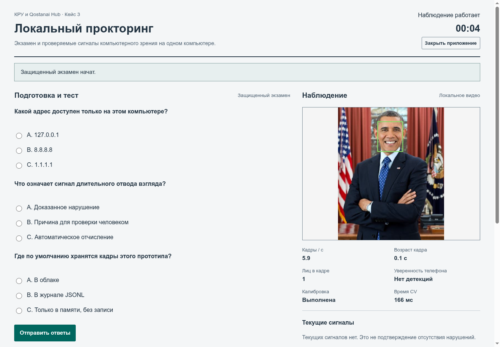

Qostanai Local Proctor | Презентация
КРУ и Qostanai Hub · Кейс №3 · Qostanai Industry Hackathon 2026
Локальный
прокторинг
Телефон, лица, взгляд и защита тестового окна
на одном компьютере.
Асемгуль Аманбек · Мансур Акашев
Рабочий прототип Python + Electron. Обработка локально, события для проверки преподавателем.
Задача кейса
Свести наблюдение и защиту
в одну проверяемую сессию
| Что замечать | Как показываем преподавателю |
|---|
| Телефон, второе лицо | Рамки на кадре, число лиц, уверенность телефона, время события. |
| Взгляд вниз или в сторону | Личная калибровка и сигнал длительностью от 2 секунд. |
| Выход из теста | Нативный перехват клавиш, запрет переходов, журнал потери фокуса. |
Сигнал вызывает проверку. Решение о нарушении принимает преподаватель.
Рабочее приложение
Тест, камера и журнал на одном экране

На снимке
Одно лицо.
Калибровка завершена.
Защита включена.
При демонстрации
Телефон и второе лицо создают сигналы для разбора.
Тестовое видео составлено из изображений с указанными источниками. Детекции вычисляются на CPU при показе.
Техническая реализация
Локальные модели и простой контур данных
Камера → OpenCV → YOLOv8n + MediaPipe
→ калибровка и фильтр длительности → журнал → Electron
Телефон и лица
YOLO: COCO cell phone.
MediaPipe: до 3 лиц,
478 ориентиров на лицо.
Взгляд и события
Калибровка от 5 кадров.
Устойчивый сигнал от 2 с.
Без облачного inference.
Защита среды
Экзамен начинается после
подтверждения нативной защиты
Windows / Linux X11
- Alt+Tab, Win, PrtScn, Ctrl+C/V.
- Kiosk и возврат фокуса.
- Запрет новых окон и переходов.
- Снятие защиты PIN преподавателя.
Ограничения ОС
В Wayland защищенный экзамен недоступен. Просмотр CV работает.
Администратор, системный экран безопасности и аппаратная запись вне модели защиты.
Аварийный выход снимает ограничения и отмечает экзамен прерванным.
Доказательства работоспособности
Проверены реальные модели,
API и сценарии событий
| Воспроизводимый пример | Результат |
|---|
| Статичные изображения | Один телефон, одно лицо с 478 ориентирами, композиция с двумя лицами. |
| 150 кадров / 30 секунд | События: телефон и поднятие, второе лицо, отсутствие лица. Калибровка выполнена. |
| Границы и ошибки | Аутентификация, явный старт камеры, ответы теста, длительность, сброс сигнала, отказ защиты на Wayland. |
Это проверка выполнения кода. Точность на экзаменах и экономия времени еще не измерены.
Потенциал внедрения
Начать с подготовленного
компьютерного класса
Первый пилот
Проверить камеры, освещение, калибровку и снятие ограничений на каждом месте.
Собрать размеченные эпизоды с согласия участников.
Что измерить
Пропуски телефона и ложные тревоги на минуту.
Задержку сигнала и время разбора журнала преподавателем.
Следующая работа: отдельные данные для распознавания наведения камеры телефона и попытки съёмки.
Комплект для отбора
Код открыт.
Сигналы можно воспроизвести.
github.com/mansur54321/qostanai-local-proctor
В репозитории
Приложение и модели.
Инструкция и тесты.
Демо, журнал проверок,
техническое описание.
Границы результата
Взгляд приблизителен.
Поднятый телефон не доказывает съёмку.
Решение принимает человек.
AI-инструмент: OpenAI Codex для кода, тестов и материалов. Модели: Ultralytics и MediaPipe. Код проекта: AGPL-3.0-only.